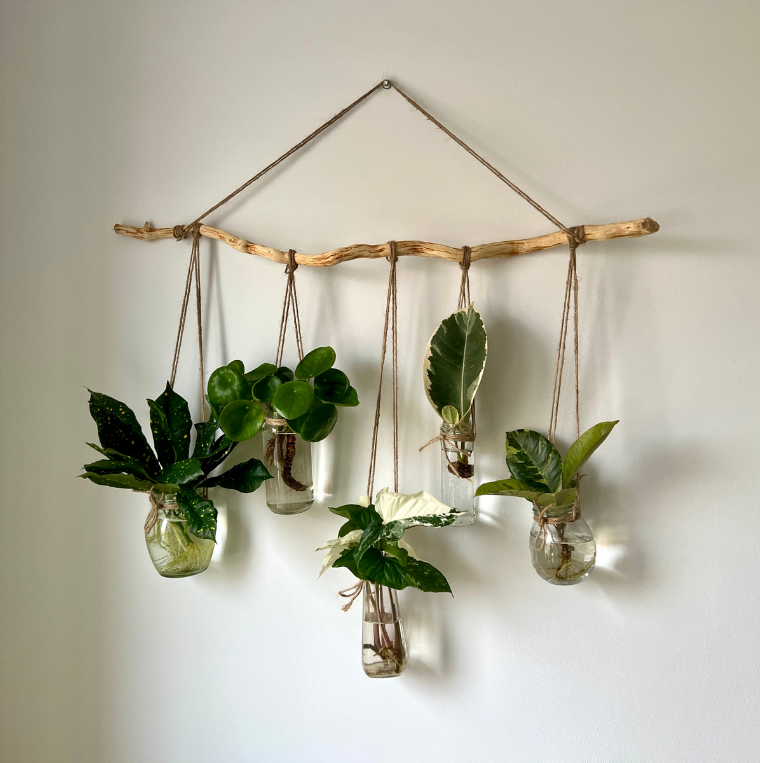

Hanging Glass Plant Display
A rustic wall hanging made from a wooden stick suspended by rope. Small glass jars hang from the stick, each holding green leafy plants. It gives a natural, minimalist, and slightly bohemian aesthetic.
- 🌿 Hanging Glass Plant Display shows small plants in suspended glass containers.
- 💧 Often used with succulents, air plants, or tiny ferns for low-maintenance greenery.
- 🪴 Adds a modern, airy, and elegant touch to any room corner or window.
- ✨ Perfect for living rooms, bedrooms, or as a creative DIY decor element.